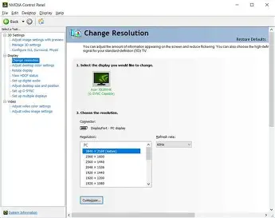

How to Speed Up a Slow PC (Without Buying New Hardware)

Is your Windows 10 or 11 device feeling sluggish? Over time, background processes, pre-installed bloatware, and non-optimal system settings can accumulate and drag down performance.
This guide will walk you through safe, effective steps to optimize and debloat your operating system using free, open-source tools and built-in Windows utilities.
Step 1: Debloat Windows with Win11Debloat

Windows comes pre-installed with numerous apps and services that consume background system resources. Win11Debloat, an open-source tool developed by Raphire, safely removes unnecessary pre-installed applications and telemetry from both Windows 11 and Windows 10.
Open PowerShell (search for PowerShell in the Start menu).
Copy and paste the following command, then press Enter:
PS> & ([scriptblock]::Create((irm "https://debloat.raphi.re/")))The script will download and launch a graphical setup window offering two main modes:
- Default: Safely removes standard bloatware while keeping core essential tools intact.
- Custom: Gives granular control over which specific apps and registry tweaks to apply.
Step 2: Enable the Ultimate Performance Power Plan

Windows includes a hidden power scheme designed to minimize micro-latencies by keeping the CPU operating at higher performance states without aggressive power-saving throttles.
Open PowerShell as Administrator (right-click PowerShell and choose Run as administrator).
Run the following command:
PS> powercfg -duplicatescheme e9a42b02-d5df-448d-aa00-03f14749eb61Open Control Panel > Hardware and Sound > Power Options.
Select Ultimate Performance from the list of plans.
- Laptops: This setting is not recommended for laptops running on battery power, as it significantly increases battery drain and heat output.
- Hardware Longevity: Keeping your CPU at peak clock speeds continuously can lead to slightly higher resting temperatures. Ensure your device has adequate cooling.
Step 3: Manage Startup Applications

Unnecessary startup programs increase boot times and run silently in the background, consuming RAM and CPU cycles.
Press Ctrl + Shift + Esc to open Task Manager.
Click the Startup apps icon (or tab) on the left sidebar.
Review the list of enabled programs and disable non-essential applications from running at startup.
Recommended to Disable for Most Users:
- Microsoft Teams
- Microsoft OneDrive (if not actively used for cloud sync)
- Phone Link
- Xbox App Services
- Edge / Web Browsers background launchers
Step 4: System Hygiene & SSD Optimization

Automating basic disk cleanup and verifying TRIM support ensures your drive maintains optimal read/write speeds over time.
A. Enable Storage Sense
Go to Settings > System > Storage.
Toggle Storage Sense to ON.
Storage Sense automatically frees up space by clearing temporary files, system logs, and empty recycle bin contents when disk space gets low.
B. Verify SSD TRIM Status
TRIM allows your operating system to inform the SSD which data blocks are no longer needed, preserving drive health and write performance.
Open PowerShell as Administrator.
Run the following command:
PS> fsutil behavior query DisableDeleteNotifyInterpreting the Output:
- DisableDeleteNotify = 0: TRIM is active and working properly.
- DisableDeleteNotify = 1: TRIM is disabled. (To enable it, run
fsutil behavior set DisableDeleteNotify 0).
Step 5: Optimize Gaming & GPU Settings

Fine-tuning your graphics stack minimizes input lag and prioritizes system resources for active full-screen applications.
A. Enable Hardware-Accelerated GPU Scheduling (HAGS)
Navigate to Settings > System > Display > Graphics.
Click Default graphics settings.
Toggle Hardware-accelerated GPU scheduling to ON (requires a system restart).
B. Windows Gaming Features
- Game Mode: Ensure this is ON (Settings > Gaming > Game Mode). It prevents Windows Update from installing drivers in the background and prioritizes CPU threads for games.
- Background Captures: Set this to OFF (Settings > Gaming > Captures). Disabling constant video encoding in the background reclaims significant hardware overhead.
C. GPU Control Panel Tweaks
NVIDIA Users:
- Open NVIDIA Control Panel > Manage 3D Settings.
- Set Power Management Mode to Prefer maximum performance.
- Set Low Latency Mode to On or Ultra.
AMD Users:
- Open AMD Software: Adrenalin Edition > Gaming > Graphics.
- Enable Radeon Anti-Lag.
- Set the global profile to Performance.
Conclusion
By removing unnecessary bloatware, configuring power profiles, reducing startup overhead, and optimizing your GPU settings, your Windows machine will operate significantly faster and feel much more responsive.